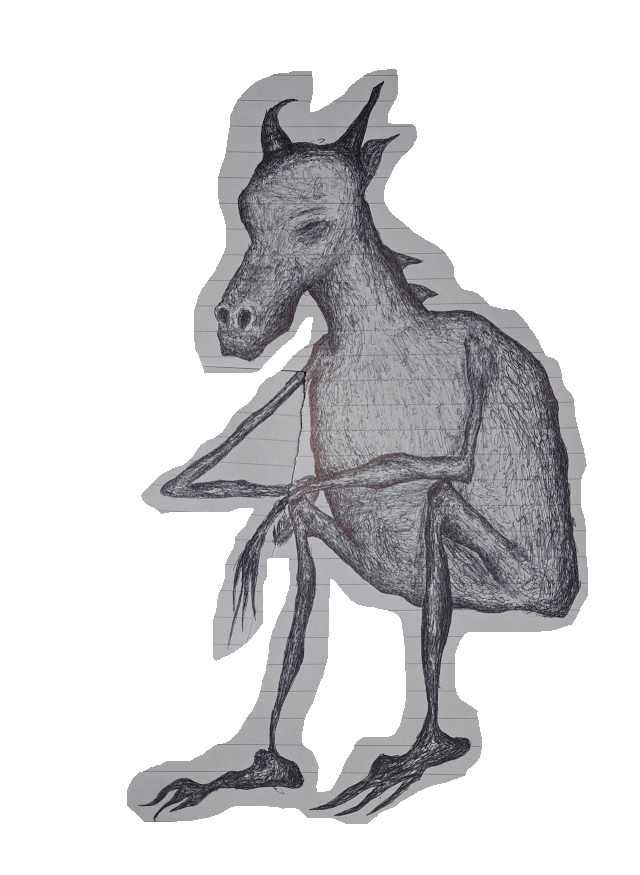

Monogastric Apocalypse Arousal
"I know where people's bones go when they die.
I know what myths do and if they are true.
I know when Earth will abandon its rightful place and go on to do greater things.
I know why wars have existed."
- Vortigern

Welcome to Monogastric Apocalypse Arousal - a website dedicated to exploring, documenting and preserving information related to sightings of monogastric phenomena as well as their ancient history, folklore and traditions.
take me to the archivesMAA is a privately-run non-profit website, created and maintained by passionate ex MMC analyst, Big Liar Mountain Buyer.